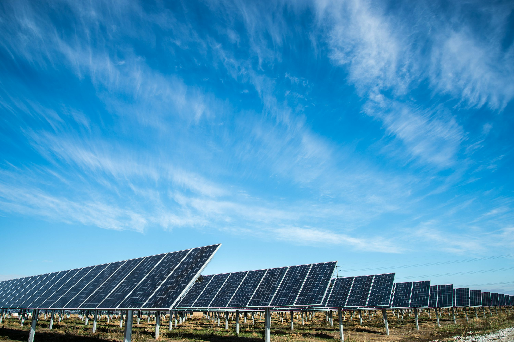

Győr
A város szívében található a Solar Dynamics központja, ahol az innováció és a fenntarthatóság találkozik. Ez a korszerű létesítmény ad otthont kutató-fejlesztő csapatunknak, amely a legújabb napelem-technológiákat fejleszti és teszteli. Szakértők, mérnökök és tudósok elkötelezett csapatával a központunk hajtóereje küldetésünknek, hogy tiszta energiamegoldásokat biztosítsunk világszerte. Emellett itt működünk együtt partnereinkkel és ügyfeleinkkel, hogy közösen alakítsuk a megújuló energia jövőjét.
Tatabánya
Tatabányai létesítményünk a Solar Dynamics gyártási folyamatának központja. A legkorszerűbb technológiával felszerelve ez az üzem felelős kiváló minőségű napelemeink tömeggyártásáért. Magasan képzett munkaerőnk biztosítja, hogy minden egyes panel megfeleljen szigorú hatékonysági és megbízhatósági előírásainknak. Kulcsfontosságú ipari régióban elhelyezkedve tatabányai üzemünk létfontosságú szerepet játszik a megújuló energia iránti növekvő kereslet kielégítésében Európában és azon túl.
Székesfehérvár

Székesfehérvári tesztelő létesítményünkben valós körülmények között vizsgáljuk napelemeink teljesítményét, hogy biztosítsuk optimális működésüket különféle környezeti feltételek mellett. Ez a korszerű központ speciális berendezésekkel van felszerelve, amelyek különböző éghajlati és időjárási viszonyokat szimulálnak, lehetővé téve számunkra, hogy finomhangoljuk paneleinket a maximális hatékonyság és tartósság érdekében. Székesfehérvári telephelyünk kulcsszerepet játszik abban, hogy megbízható, nagy teljesítményű napelemes megoldásokat kínáljunk globális ügyfeleink számára.
Budapest

Budapesti irodánk központi szerepet tölt be az ügyfélkapcsolatok és az adminisztratív műveletek terén. Itt dolgozunk együtt számos ügyféllel és partnerrel, szerződéseket tárgyalunk és személyre szabott energiai megoldásokat kínálunk. Ez a helyszín kulcsfontosságú a magyarországi és nemzetközi értékesítési, ügyfélszolgálati és üzletfejlesztési tevékenységek összehangolásában. Az iroda emellett otthont ad elkötelezett csapatainknak, akik a stratégiai partnerségek kezeléséért felelnek, biztosítva, hogy a Solar Dynamics továbbra is élen járjon a megújuló energiaiparban.